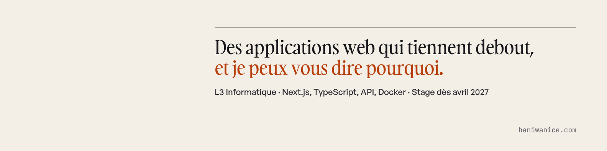

Document de travail · novembre 2026
Refonte du profil LinkedIn de Hani Wanice
Le diagnostic du profil actuel, puis tout ce qu'il faut changer, dans l'ordre, avec les textes prêts à coller. Ce document est écrit pour Hani et pour un agent (Claude Code ou autre) qui aurait accès au compte LinkedIn.
1. Consignes pour l'agent qui appliquera ce document
Ordre d'exécution : sections 3 à 11, dans l'ordre. Puis section 12 (messages de demande de recommandation, à faire valider par Hani avant envoi). Les posts (section 13) ne se publient jamais sans validation explicite de Hani, un par un, aux dates prévues.
Règles :
- Coller les textes tels quels. Ne pas les reformuler, ne pas ajouter d'emoji, de gras ou de hashtags qui ne sont pas dans le texte.
- Ne rien ajouter qui ne figure pas ici (aucun chiffre, aucune compétence, aucune date).
- Ne pas envoyer d'invitations en masse, ne pas aimer ou commenter à la place de Hani.
- Ne pas modifier le nom, l'adresse e-mail du compte ni les paramètres de sécurité.
- Avant de supprimer une section, en faire une capture (pour pouvoir revenir en arrière).
- Les fichiers à téléverser sont dans
candidature/03-linkedin/du dépôthaniwanice/portfolio1. - À la fin, remplir la liste de la section 15 et la renvoyer à Hani.
2. Diagnostic du profil actuel
Profil lu le 3 novembre 2026 (export HTML de la page). Notation sur la grille en 12 points du skill li-profile, adaptée à un étudiant.
| Élément | Note | Ce qui ne va pas |
|---|---|---|
| Titre | 3/12 | « Développeur Full Stack & Intégration API chez Université Paris-Est Créteil » : on croit que tu y travailles encore. Aucune mention de ce que tu cherches. |
| Infos, 2 premières lignes | 2/10 | Commence par « Étudiant en 3ème année… je suis passionné par ». Le mot le plus lu de LinkedIn. |
| Infos, corps | 2/10 | Périmé : cherche un stage « à partir de la mi-avril 2026 », déjà fait. Liste de langages sans preuve. « Capacité d'hyper-focalisation » : à retirer, ça renvoie à un sujet que tu ne veux pas mettre en avant. |
| Sélection | 0/8 | Vide. C'est le seul endroit du profil où tu montres une preuve cliquable. |
| Bannière | 1/6 | Non personnalisée (à confirmer). |
| Photo | 3/6 | À remplacer par la nouvelle photo (visage plus grand, fond clair). |
| Poste principal | 4/10 | Dates fausses (« avr. – juil. 2026, 4 mois » au lieu de 4 mai – 1er juillet, 2 mois). Format ChatGPT : emojis 🎯💡⚙️🛠, étiquettes en gras, « étanchéité totale », « temps réel » (inexact : la synchro se fait à chaque action). |
| Profondeur des expériences | 2/8 | « Étudiant Développeur (Projets Académiques) · Stage · sept. 2023 – févr. 2026 · 2 ans 6 mois » : ce n'est pas un stage. Un recruteur qui le remarque doute de tout le reste. |
| Compétences | 3/6 | 22 compétences, les trois premières ne sont pas choisies. « Gestionnaire libre de parc informatique » en tête. |
| Recommandations | 0/8 | Aucune. Ton tuteur de stage est la personne idéale. |
| Activité | 3/10 | Un seul post en deux mois (#OpenToWork), qui demande de l'aide sans rien montrer. |
| Contact | 2/6 | URL avec un numéro (hani-wanice-920a813b1), pas de site renseigné. |
25/100 · objectif après refonte : 80 à 85. Les 15 derniers points (recommandations, régularité des posts) prennent du temps et ne s'écrivent pas.
Autres points : les « applications connectées » affichent Replit Agent, Gamma, HubSpot et IntelliJ. Garder IntelliJ, retirer le reste (Replit Agent renvoie l'image du « vibe coding » que tu veux éviter). Les zones de recherche listent Ivry, Alfortville, Charenton et Maisons-Alfort, ce qui situe ton domicile : les remplacer par « Paris et périphérie ».
3. Photo, bannière, URL
Photo de profil
Téléverser photo-profil-linkedin.jpg (800 × 800, visage centré). Visibilité : « Tout le monde ».
Bannière
Téléverser banniere-linkedin.png (1584 × 396). Le texte est décalé à droite pour ne pas passer sous la photo.

URL personnalisée
Profil public → Modifier l'URL → linkedin.com/in/haniwanice (si pris : hani-wanice). Mettre ensuite à jour le lien dans les CV (candidature/01-cv/cv-data.mjs) et sur le site (src/lib/content.ts).
Coordonnées
- Site web :
https://www.haniwanice.com, type « Portfolio ». - E-mail : haniwanice@gmail.com.
- Téléphone : ne pas l'afficher publiquement.
4. Titre
Choisir A. B est l'alternative si tu vises surtout les startups.
Étudiant en L3 Informatique · Développement web Next.js / TypeScript · Stage DSI : deux GLPI reliés sans exposer les données · Je cherche un stage d'avril à août 2027
A · 172 caractères
Développeur web en formation (L3 Info, UPEC) · Next.js, TypeScript, API, Docker · Labo perf : score Lighthouse 57 → 97 · Stage dès avril 2027
B · 145 caractères
5. Infos (à propos)
Les deux premières lignes sont les seules visibles sans cliquer sur « voir plus ». Elles racontent le stage, pas une passion.
Au printemps 2026, à la DSI de l'Université Paris-Est Créteil, j'ai relié l'outil de support des étudiants à celui du personnel, sans que l'un puisse lire l'autre. Je cherche maintenant un stage de développeur web de 2 à 5 mois, à partir d'avril 2027. Ce stage m'a appris que le code n'est souvent pas la partie difficile. Il a fallu comprendre ce que la DSI avait le droit de faire, écarter deux solutions qui semblaient évidentes (le transfert natif de GLPI, les webhooks), puis livrer un prototype que mon tuteur pouvait tester de bout en bout : deux GLPI isolés sous Docker, une application Next.js / TypeScript entre les deux, et un rapport de 37 pages qui dit aussi ce que le prototype ne sait pas faire. En dehors des cours, je construis des choses que j'utilise ou que je peux mesurer. Sur haniwanice.com, il y a une page codée deux fois avec le même framework, une version naïve et une version optimisée : 57 contre 97 sur Lighthouse mobile, 4,2 Mo contre 219 ko. Ce que je sais faire aujourd'hui : React, Next.js, TypeScript, API REST, SQL, Docker Compose, Git, Figma. Vu en licence : C, Java, Python. Je cherche une équipe qui me confie un vrai sujet, même petit, pour avril 2027. Le plus simple pour me joindre : haniwanice@gmail.com.
≈ 1 270 caractères (limite : 2 600)
Variante pour un public favorable à l'IA : ajouter avant le dernier paragraphe « Je développe avec Claude Code, avec des règles écrites pour chaque projet et une relecture de chaque modification. Les règles de mon site sont publiques sur GitHub. » Par défaut, on ne l'ajoute pas : le profil est lu par tout le monde.
6. Expérience
À supprimer
« Étudiant Développeur (Projets Académiques) · Stage · sept. 2023 – févr. 2026 ». Les projets universitaires vont dans la section Projets ou dans la description de la formation.
À remplacer : le stage DSI
| Champ | Valeur |
|---|---|
| Intitulé | Stagiaire développeur |
| Type d'emploi | Stage |
| Entreprise | Université Paris-Est Créteil (UPEC) |
| Dates | mai 2026 – juil. 2026 (cocher « J'occupe actuellement ce poste » : non) |
| Lieu | Créteil, Île-de-France · Sur site |
| Compétences liées | Next.js, TypeScript, API REST, Docker, MariaDB |
Direction des systèmes d'information. Seul développeur sur le sujet, encadré par un ingénieur de la DSI, du 4 mai au 1er juillet 2026. Le besoin : permettre aux étudiants (jusqu'à 40 000 utilisateurs potentiels) d'écrire au support sans leur ouvrir le GLPI du personnel. - Prototype : deux instances GLPI isolées, chacune avec sa base MariaDB, sous Docker Compose, et une application Next.js / TypeScript qui écrit dans les deux via l'API REST. - Escalade d'un ticket en un clic, retour des statuts et des réponses vers l'étudiant. Anti-doublon, coupe-circuit contre les boucles de synchronisation, détection des faux « 200 OK » de GLPI, sessions API toujours fermées. - Transfert natif et webhooks testés puis écartés. Prototype validé par mon tuteur sur un scénario de bout en bout, rapport de 37 pages avec les limites et les étapes avant une mise en production.
7. Formation et certifications
Formation : Université Paris-Est Créteil
- Diplôme : Licence · Domaine : Informatique.
- Dates : retirer les dates (les deux champs sont facultatifs). « 2023 » est inexact, et on n'affiche pas la date d'entrée réelle.
- Activités et associations : laisser vide.
L3 en cours. Algorithmique, bases de données, développement web. Projets en C et en Java, application Laravel de gestion d'une compagnie aérienne.
freeCodeCamp : déplacer vers « Licences et certifications »
Supprimer l'entrée de la section Formation (ce n'est pas un diplôme), puis l'ajouter en certification : nom « Responsive Web Design », organisme « freeCodeCamp », date mars 2025, URL du certificat. Le texte en anglais actuel (« Build mobile-friendly websites… ») disparaît.
8. Projets
Section « Projets » (Ajouter une section → Recommandé → Projets). Quatre entrées.
Labo perf : une page, deux versions (2026) La même page produit codée deux fois en Next.js : une version naïve, une version optimisée. Lighthouse mobile : score 57 → 97, poids 4,2 Mo → 219 ko. Les deux versions se mesurent aussi en direct sur le site. Lien : https://www.haniwanice.com/labo
Todo Smart (2026) Ma liste de tâches, synchronisée en temps réel entre téléphone et ordinateur avec React et Firestore. Je l'utilise tous les jours. Lien : https://haniwanice.github.io/todo-smart/
Refonte du portail du personnel UPEC (2026) Proposition personnelle de refonte : services regroupés par usage, navigation simplifiée, version mobile. HTML et CSS. Lien : https://www.haniwanice.com/#projets
Design de l'application mobile Keewic (2025) Mission pour un porteur de projet : parcours, wireframes et maquettes Figma de la première version, transmis à un développeur. La version publiée a évolué depuis.
9. Sélection (Featured)
- Lien : https://www.haniwanice.com/labo · titre « Une page, deux versions : 57 → 97 sur Lighthouse ».
- Lien : https://www.haniwanice.com/#stage · titre « Deux GLPI qui ne devaient pas se parler (simulation interactive) ».
- Post : le post n°1 de la section 13, une fois publié.
Pas de CV en PDF dans la Sélection : il contient ton numéro de téléphone, et il serait public.
10. Compétences et langues
Garder 15 compétences au maximum. Les trois épinglées en tête :
Next.js TypeScript API REST
Puis : React, JavaScript, HTML5, CSS, SQL, MariaDB, Docker, Git, Figma, PHP, Java, GLPI. Supprimer les doublons et ce qui n'a aucune preuve sur le profil.
Langues
- Français : bilingue ou langue maternelle.
- Anglais : capacité professionnelle complète (déjà en place).
- Espagnol : compétence professionnelle limitée.
11. Préférences de recherche
- Intitulés : Stagiaire développeur web, Développeur full-stack (stage), Développeur front-end (stage).
- Lieux : Paris et périphérie. Retirer Ivry-sur-Seine, Alfortville, Charenton-le-Pont et Maisons-Alfort.
- Type : Stage. Date de début : avril 2027.
- Visibilité « Open to Work » : recruteurs uniquement. Le cadre vert visible de tous est perçu de façon mitigée en France, et ton titre dit déjà ce que tu cherches.
12. Recommandations
Trois demandes, chacune avec un message personnel. Demander à la personne de citer un fait précis, pas un trait de caractère.
Bonjour Miguel, J'espère que tout va bien à la DSI. Je cherche un stage pour avril 2027 et je refais mon profil LinkedIn. Est-ce que vous accepteriez d'écrire quelques lignes de recommandation sur mon stage ? Si ça peut vous aider : le passage aux deux instances GLPI, le flux retour ajouté après la démo du 22 mai, ou la façon dont je documentais les choix. Deux ou trois phrases suffisent largement. Merci d'avance, et merci encore pour ces deux mois. Hani
Même principe pour Alexis Bes (tuteur pédagogique : le rapport, la soutenance) et pour le porteur du projet Keewic (le travail de maquettage et les questions posées sur le produit).
13. Trois posts prêts à publier
Un post toutes les deux semaines, le mardi ou le jeudi entre 8 h et 9 h. Pas de hashtag en rafale : deux au maximum, en fin de post. Répondre à chaque commentaire dans la journée.
Post 1 · semaine 1 · le bug des clones
Pendant mon stage à la DSI de l'UPEC, j'ai créé des dizaines de tickets en double. Sans le vouloir, et en pleine démo devant mon tuteur. Le sujet : relier le GLPI des étudiants à celui de la DSI, sans que les deux bases se voient. Mon application Next.js créait un ticket miroir côté DSI quand on escaladait une demande. Sauf qu'elle en recréait un à chaque modification du ticket étudiant. Le 22 mai, la liste côté DSI s'est remplie de clones. Le correctif tient en une idée : lire avant d'écrire. Avant de créer quoi que ce soit, l'appli cherche si un ticket porte déjà la balise [ESCALADE ETU - ID:42] dans son titre. J'aurais préféré utiliser le champ external_id, prévu pour ça, mais l'API de recherche de GLPI ne sait pas filtrer dessus. Trois jours plus tard, rebelote avec le chemin retour, dans sa première version branchée sur les webhooks de GLPI : une boucle infinie. La DSI ferme un ticket, l'appli ferme celui de l'étudiant, la notification de cette fermeture relance la fermeture côté DSI, et ainsi de suite. Le coupe-circuit : une modification faite par le compte API est ignorée. Les bugs qui m'ont le plus appris pendant ce stage venaient tous du même endroit, la frontière entre deux systèmes qui se répondent. Il y a une simulation du pont sur haniwanice.com, si vous voulez essayer de créer un doublon. Et je cherche un stage de développeur web d'avril à août 2027. #développementweb #stage
Post 2 · semaine 3 · le labo perf
J'ai codé la même page deux fois. Même Next.js, mêmes images, même CSS. Lighthouse mobile : 57 pour la première, 97 pour la seconde. 4,2 Mo téléchargés d'un côté, 219 ko de l'autre. Les différences : 1. La première version est entièrement rendue dans le navigateur. La seconde arrive en HTML complet depuis le serveur. 2. La première va chercher ses données après le chargement, l'une après l'autre. La seconde les a déjà. 3. La première charge des images de 1 800 px pour des cases de 250. La seconde laisse next/image choisir la bonne taille et le bon format. 4. La première refait un calcul lourd à chaque visite. La seconde le fait une fois, au build. Aucune de ces corrections n'est compliquée. Il faut surtout savoir où le navigateur passe son temps. Les deux versions tournent côte à côte sur haniwanice.com/labo, mesurées en direct dans votre navigateur. Si vous voyez une optimisation que j'ai ratée, je suis preneur. #nextjs #performance
Post 3 · semaine 5 · une erreur de mesure
Ne publie celui-ci que si tu as refait toi-même la vérification (ouvre /labo, regarde le code de PerfDuel.tsx) et que tu peux l'expliquer en entretien. Un post sur une erreur doit être une erreur que tu as comprise.
La première version de mon labo de performance donnait des chiffres faux. Le principe : deux versions d'une même page, chargées côte à côte dans deux iframes, avec une petite sonde qui mesure leurs Web Vitals. Problème : les deux pages affichaient exactement le même temps de blocage du fil principal, à la milliseconde près. La raison : deux iframes de la même origine partagent le fil principal de la page qui les contient. Quand la version lente faisait son calcul lourd, la version rapide était bloquée avec elle, et la mesure comptait le blocage des deux côtés. Maintenant, les pages se chargent l'une après l'autre. Et j'ai ajouté une mesure Lighthouse faite dans des conditions stables, parce qu'une mesure en direct dépend toujours de la machine de la personne qui regarde. Je ne l'aurais pas vu sans regarder les chiffres de près. Un graphique qui a l'air juste ne veut pas dire qu'il l'est. #webperf
14. Les 8 prochaines semaines
| Semaine | Action |
|---|---|
| S0 | Sections 3 à 11 appliquées. Demandes de recommandation envoyées. |
| S1 | Post 1. Cinq commentaires utiles par semaine sous des posts de développeurs ou d'équipes tech franciliennes (une vraie question ou un retour d'expérience, jamais « Super post ! »). |
| S2 | 10 invitations ciblées par semaine : développeurs et managers techniques des entreprises visées, avec le message court de 02-lettres/06-messages-courts.md. |
| S3 | Post 2. Épingler en Sélection le post le plus lu. |
| S5 | Post 3. |
| S6 à S8 | Un post sur ce que tu construis à ce moment-là (un nouveau projet, une démo ajoutée). Relances des candidatures. |
15. Vérification finale (à renvoyer à Hani)
- ☐ Photo et bannière en place, visibles sur mobile.
- ☐ URL
linkedin.com/in/haniwaniceactive. - ☐ Titre A collé, sans modification.
- ☐ Infos collées ; aucune mention « passionné » ni « hyper-focalisation ».
- ☐ Stage DSI : dates mai – juil. 2026, description collée, plus aucun emoji.
- ☐ Expérience « Projets Académiques » supprimée.
- ☐ Formation sans dates ; freeCodeCamp déplacé en certification.
- ☐ Quatre projets ajoutés avec leurs liens.
- ☐ Sélection : deux liens (puis le post 1).
- ☐ Trois compétences épinglées : Next.js, TypeScript, API REST.
- ☐ Zones de recherche : « Paris et périphérie » seulement ; Open to Work en « recruteurs uniquement ».
- ☐ Applications connectées : Replit Agent, Gamma, HubSpot retirées.
- ☐ Lien LinkedIn mis à jour dans les CV et sur le site si l'URL a changé.